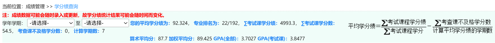
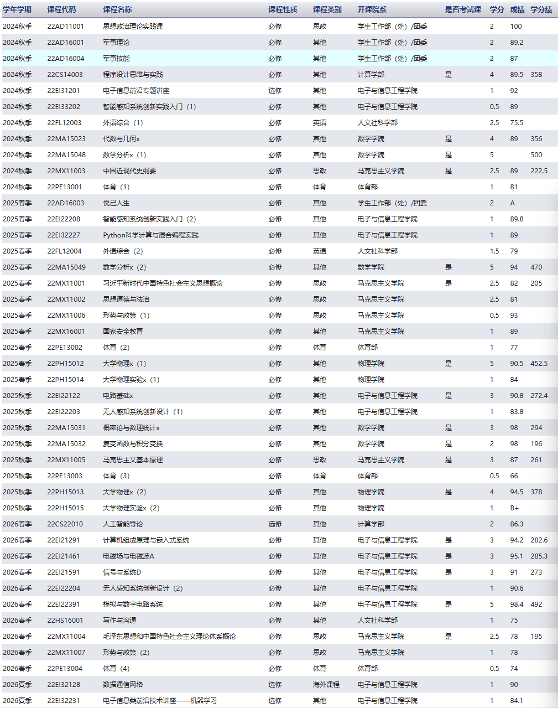
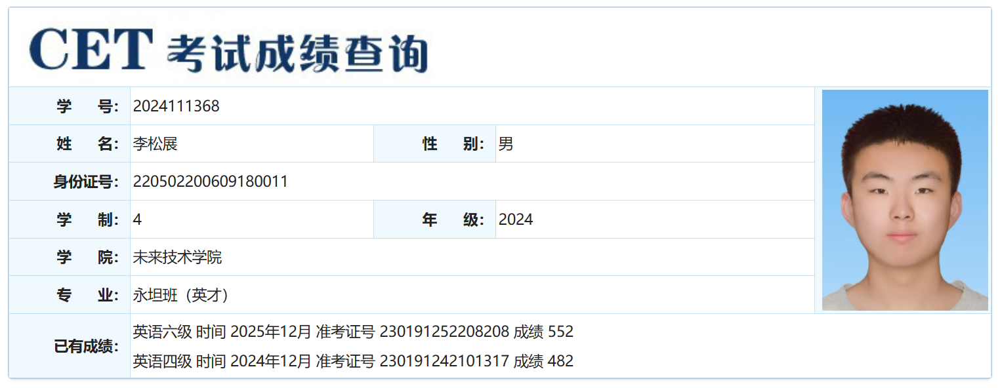

Kamikaze
独立项目Independent详见仓库说明。See repository for details.
哈尔滨工业大学（本部）· 未来技术学院 · 永坦班（院士特色班）· 本科三年级Harbin Institute of Technology (Main Campus) · School of Future Technology · Yongtan Honors Class · Undergraduate (3rd year)
从计算机视觉与深度学习出发，探索多模态学习、具身智能与世界模型。Starting from Computer Vision & Deep Learning, progressing toward Multimodal Learning, Embodied AI & World Models.
哈尔滨工业大学（本部）未来技术学院永坦班本科生，现于陈雨时教授课题组进行高光谱数据增强方向科研，以第一作者推进论文；正准备进入左旺孟老师课题组实习，规划直博科研。关注将视觉与深度学习基础延伸至多模态学习、具身智能与世界模型。Undergraduate at the Yongtan Honors Class, School of Future Technology, HIT (Main Campus). Currently researching hyperspectral data augmentation in Prof. Yushi Chen's group, pursuing a first-author paper, and preparing for an internship in Prof. Wangmeng Zuo's group with a PhD track in mind. Aiming to extend my CV/DL foundation toward multimodal learning, embodied AI, and world models.
学分绩 · 资质
GPA · Qualifications
当前研究 · 研究兴趣 · 规划
Research · Interests · Plans
大学 · 高中
University · High School
GitHub 项目
GitHub Projects
手机 · 邮箱 · 微信
Phone · Email · WeChat
下载简历
Download CV
Harbin Institute of Technology（哈尔滨工业大学 · 本部）



跟随陈雨时老师进行高光谱数据增强方向的研究，目前正在准备第一作者论文；同时准备进入左旺孟老师课题组实习。Working with Prof. Yushi Chen on hyperspectral data augmentation, preparing a first-author paper; also preparing for an internship in Prof. Wangmeng Zuo's group.
多模态表征学习、视觉-语言模型、多模态基础模型等。
Multimodal representation learning, vision-language models, multimodal foundation models.
跨模态理解与推理，视觉问答、多步推理等。
Cross-modal understanding and reasoning, visual question answering, multi-step reasoning.
视觉-语言-动作模型，具身智能体的感知与决策。
Vision-Language-Action models, embodied perception and decision-making.
可预测的世界模型、空间智能，支持智能体规划与交互。
Predictive world models, spatial intelligence for planning and interaction.
进入左旺孟老师课题组进行直博科研，研究方向与研究兴趣一致。Pursuing a direct-PHD in Prof. Wangmeng Zuo's group, with research directions aligned with the interests above.
详见仓库说明。See repository for details.
详见仓库说明。See repository for details.
手机Phone：13943581356
微信WeChat：13943581356
QQ：3066537460
邮箱Email：2024111368@stu.hit.edu.cn
欢迎交流科研与合作。Open to research collaboration.